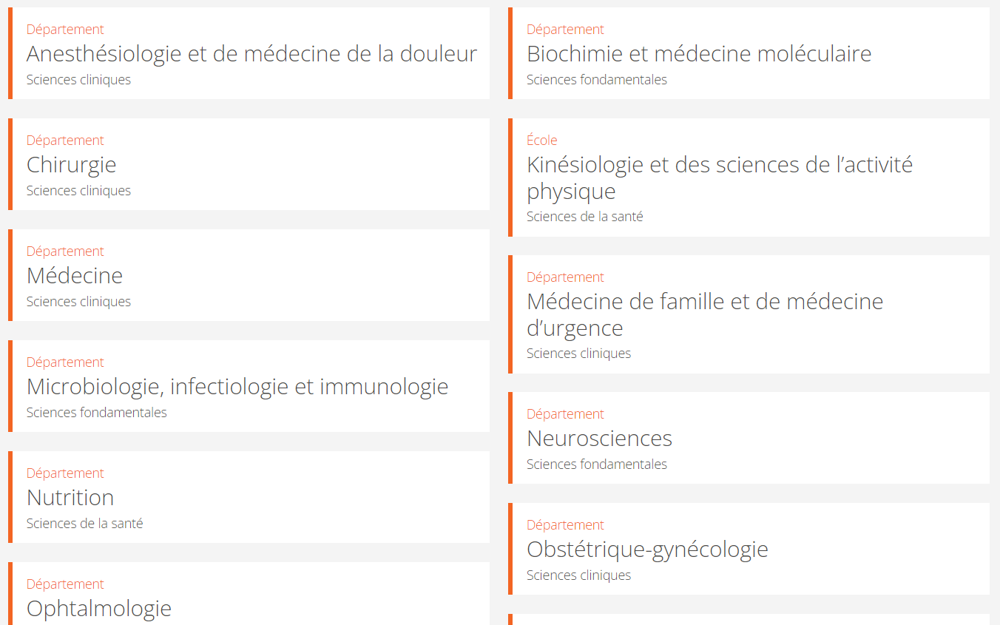

retour
Canada :
Premier coup de coeur de ce matin.
Tiens quelques unes de leurs filières :

Pour la deuxième, tu as directement les bourses affichées dès la page d'accueil :
Pour celle-là, faudra juste explorer un peu et que tu crées un compte mais j'ai vu qu'ils avaient la filière que tu veux :
Université NOSM
Une autre d'Ottawa pour laquelle le MCAT n'est pas obligatoire
ESPUM, mon deuxième coup de coeur...peu d'exigences
UDS, cette école propose des bourses mais il faut déposer ta candidature avant le 1er septembre
Presaue coup de coeur
Page des bourses de l'université de Moncton
Troisième coup de coeur
Université de Toronto interessante
Page d'accueil
Royaume-Unis :
quelques écoles
Des écoles
Des choses importantes à savoir
Encore
Etats-Unis :
Comment étudier la médecine aux États-Unis ? Notre guide
Conseils pour integrer
Pour faire ton cv je connais pas meilleur site
canva.com
Quelques resumés et extraits
Resumé sur: La Tragédie du roi Christophe
16 juin 1976, le souvenir impérissable du massacre d'étudiants noirs à Soweto de
Cahier d'un retour au pays natal
Les Mains sales, Jean-Paul Sartre
Les Mains sales, les tableaux
Discours sur le colonialisme
10 DÉCEMBRE 1957: Albert Camus reçoit des mains du roi Gustave VI le prix Nobel de littérature dans la Maison des concerts de Stockholm.
Les Soleils des indépendances
La Peste
Un peu de vocabulaire...
Accord sujet / verbe
Celui-là aussi est pas mal...
Figures de style
Pour apprendre l'anglais ces sites me plaisent bien
Global exam
Le site où tu peux écouter les cours et faire des quiz
Ici t'as Duolingo version Ordinateur
Le site recommandé par mon prof d'anglais
Rester focus : 7 méthodes testées et approuvées
Allez viens...
🌺... 🌺... 🌺... 🌺... 🌺... 🌺... 🌺... 🌺... 🌺... 🌺... 🌺... 🌺... 🌺... 🌺... 🌺... 🌺... 🌺... 🌺... 🌺... 🌺... 🌺... 🌺... 🌺... 🌺... 🌺... 🌺... 🌺... 🌺... 🌺... 🌺... 🌺... 🌺... 🌺... 🌺... 🌺... 🌺